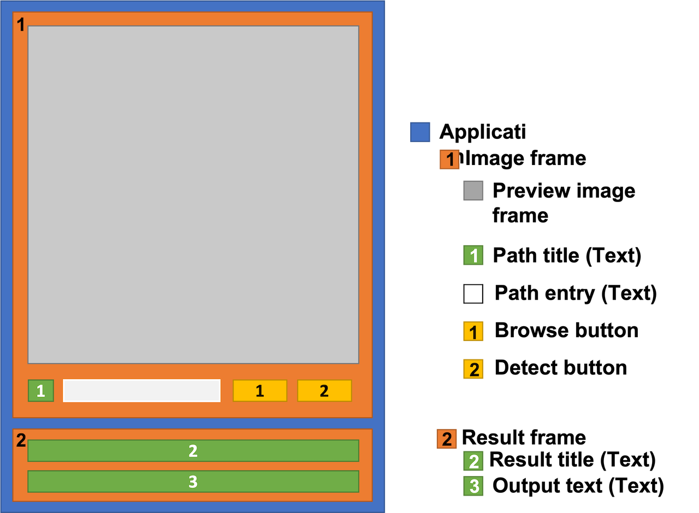
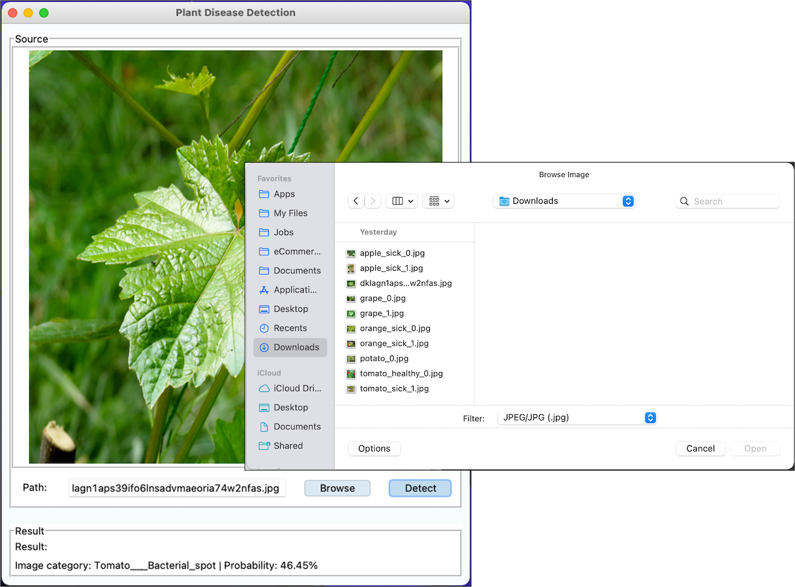
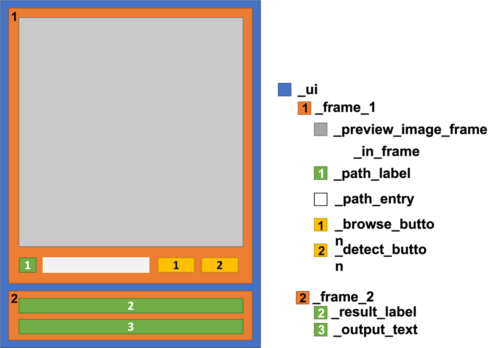
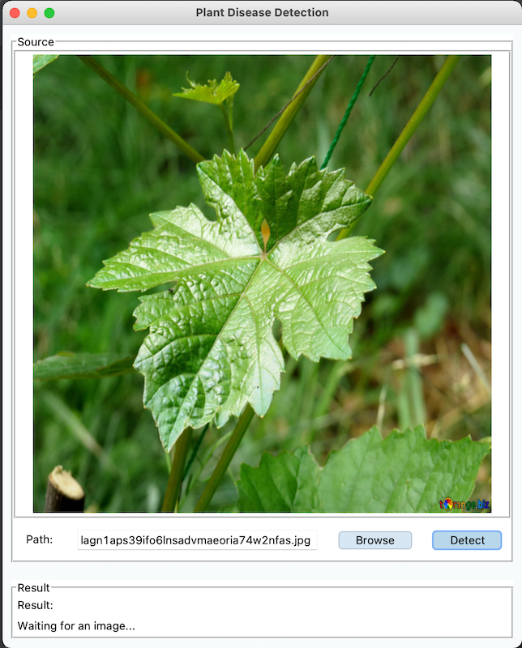
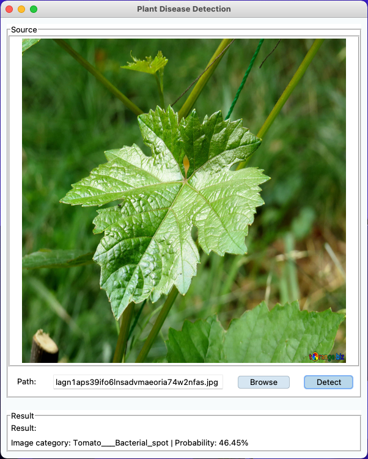

Part 2 - Desktop App
Plant Disease Detection: Part 2 Build a desktop application

In this part we will create a working desktop application to browse an image and use a machine learning model (from part 1) detect what disease the plant has.
What to expect
- Create a GUI with tkinter
- Browser image from a folder on your computer
- Show image preview
- Use a trained TensorFlow model (from part 1) predict what disease the plant is infected with
Caution
The project is running on a macOS. Some features may not work properly on other os.
Design the application layout and functionalities
In part 1 we have done everything through code. Now it is time to do it through a user interface.
To get our application finished as fast as possible, we will only focus on the necessary functions such as: - Browse an image from our computer - Show a preview of the image we want the model to detect - Show the file location where the image is located - Execute a detection command from the ui - Show the model prediction result on the ui
Take all the points into account, the application layout should look something like this.

Let's start coding
To keep everything clean and organized we will follow the oop practice. Knowing that, we will create 4 python scripts:
-
main.py: for running the application -
root.py: for rot task such as keep the ui open or closing the application. -
user_interface.py: handling the user interface of the application, such as design or main ui tasks. -
backend.py: to handling all none ui task, such as detecting plat's disease.
Info
See full script here on GitHub
Project structure
The project structure will look like this.
main.py # main file to run the application
root.py # root
user_interface.py # handling user interface
backend.py # handling image preprocessing and ml prediction
model_effb0/ # contains the ml model from part 1
... # model files
Later on we will copy the model saved from part 1 into our project
The main script
The main.py task is to initialize the most basic function that is required by the application.
In our case it only initializes the Root class.
user_interface.py | |
|---|---|
Info
See full main.py here
Application first run with root.py
main.py will initiate Root class and with that to run a blank window for the first time.
Import the libraries
Import Libraries
root.py | |
|---|---|
Caution
UserInterface class will be created later in the create user interface section
Create Root class
root.py | |
|---|---|
Info
Our Root class will inherit from tk.Tk
init function
At initializing, the following variables will be set and configured
self.title("Title"): set application title toPlant Disease Detectionself.geometry("600x720"): set a fix size of the application to 600 x 720 pixels. You can comment this out to have a dynamic size.self.configure(bg="#F7FBFC"): set background color to a light blue colorself.protocol('set_protocol', 'command'): here I want to set a delay when closing the application. When click close the_close_delayfunction will be triggered and give a short time of delay before the application will be terminated.self._ui: create the ui frame to contain all the ui element. Then initializeUserInterfaceclass into it. TheUserInterfaceclass can be found here, we will revisit it also later on in this page.self._ui.pack():
The code will look like this:
close_delay function
The function will add a short delay time when closing the application (by clicking x).
Delay time, in seconds, can be adjusted in time.sleep().
root.py | |
|---|---|
(Optional) Test run the application
It isn't an application yet, but it is worth to see how its look like. By commenting out line
23, and run the main.py script a blank window will be opened
Build a User Interface
Now it's time to create the user interface we have waited so long. When finished with code, the application will look like this;

Caution
All codes related to the GUI of the application is contained in the user_interface.py file.
The final application might look different on some devices and os.
Import libraries
user_interface.py | |
|---|---|
Caution
'tkmacosx' is only to used to run some tkinter features properly on macOS.
Create a User Interface Class
The UserInterface class will consist with 4 functions
UserInterface # UserInterface class
__init__ # initialize the class
_show_image # show image after browsing
_browse_image # triggerd when click browse button
_detect_image # triggerd when click detect button
init function
The init function's codes are as following:
There is a lot going on in this function. When you still remember when we design the layout earlier, you will see that we only create new variables to match our design. Here is an overview of all the variables.

Now lets see our code.
ui elements
-
self._frame_1: -
self._preview_image_frame: -
self._in_frame: -
self._path_label: -
self._path_entry: -
self._browse_button: -
self._detect_button: -
self._frame_2: -
self._result_label: -
self._output_text:
initialize Backend class
self._backend:
show_image function
user_interface.py | |
|---|---|
browse_image function
user_interface.py | |
|---|---|
detect_image function
user_interface.py | |
|---|---|
Let's run and see how the application look like
Now, we have finished the application's ui. Without further a due, let's run and see how its look like.
Caution
Different devices and os may show different results

How nice it is! All the buttons are working fine. The image has been adjusted to perfectly fit our frame. The file location is showing in our entry element. The result box is showing some text.
Next jump into our last script, the backend.py script, to make a fully functional application.
Create the backend algorithm that runs the program
We will create a new python script call backend.py to separate all the backend code from the others
Backend # Backend class
__init__ # initialize the class
_load_model # use to load the ml model when starting the app
predict_image # initialize image prediction
_prepare_image # prepare the input image for the ml model
From the code structure above, we will only have 4 functions to run the image prediction.
Import Libraries
Before we start, let's import some libraries first.
backend.py | |
|---|---|
Create a Backend Class
The Backend class contains all the computational process of the application. The full python code in backend.py under Resources.
CLASS_NAME
CLASS_NAME a static list contains all the category names of the dataset used to
train the machine model in part 1. Currently,
it is hard coded since I haven't found a better solution to transfer the information into here.
init function
Since we want load the ml model once only at start, the Backend class will be initiated and stored from a Root class (see root.py).
backend.py | |
|---|---|
The __init__ function contains 3 variables:
self._image_shape: size of the input size of the model. We need to resize the image that be used in the model to match the model's input size.self._model_path: path where the ml model is located in our project foldersself._model: store our ml model.self._load_model(): call_load_model()function to load the model.
Note
self._image_shape and self._model_path are static variables.
I put it in here only to be able to work with other models in the future.
Since, we're only working with one ml model, it isn't necessary to make it dynamic.
_load_model function
_load_model will be immediately called after the class initialization. It will load the model
and store it in the self._model variable.
backend.py | |
|---|---|
A keras function is need to load a TensorFlow model. By calling _load_model
and inject a saved model path as an input, we can initialize a pre-trained model.
It might take a while to load depending on the size and complexity of the model.
predict_image function
The predict_image function is only called from the user_interface.py script when the
user click the Detect button on the GUI. The function will call another function, _prepare_image,
to load and prepare the image for the detection. Then, the function will predict the outcome
with the model and return its value as a string to show it on the user interface.
An example of the returned string: Image category: Soybean___healthy | Probabilty: 94.45%
backend.py | |
|---|---|
Prepare image function
Before the model can process an image, the input size of the image has to match the input shape of the model.
The _prepare_image method read the image from its stored location and process it to match the size and dimension
same as the input size required by the model.
backend.py | |
|---|---|
Let's run the app and see the outcome
Now that we finally finished the app, why not test it right away.

As we can see at the bottom of our app, the output from our machine learning model is shown correctly in the ui. HOWEVER, the detection result isn't really correct. The image I used is a grape leaf, but the model has detected it as a tomato leaf 😅. We might have to go back and evaluate our model from part 1 again.
What's next
Finally, we have reached the end of this part. We have quite of a journey off creating a desktop application. For now, we can only use it through an IDE. In the next part 3, we will make the app executable and be able to run as a real world application from any computer (or at least most of them).